The instagram feed of renowned travel influencers often grace us with inspiring captions that ignite our wanderlust and fuel our desire to explore the world. Indeed, the voyage is incredibly captivating. You also understand that while material wealth can fill your pocket, the true fulfilment of the soul lies concealed within the enthralling expedition known as travel. But when said, these travel-related questions often become the reason for trip cancellation, so should we cancel the plan, not at all. We will seek solace in the kingdom of travel instagram influencers.
But Who exactly are Travel Influencers?
Travel influencers are the video creators who make videos while travelling different destinations across the world and share their experiences with the world through social media.
They uplift through captivating storytelling, showcasing extraordinary experiences, uncovering hidden gems, and capturing breathtaking landscapes. Plus shapes your itinerary, fuels your imagination, and helps create unforgettable travel plans.
As a fellow foodie and travel enthusiast, explore the genuine recommendations of top travel influencers in India. But beyond that, did you know that travel Instagrammers play a vital role in destination marketing? Their collaborations with tourism boards, hotels, airlines, and other travel-related brands help promote specific destinations and travel experiences. Their impact can contribute to increasing visitor numbers, economic growth, and job creation in the tourism sector. In the vast world of the best travel instagram influencers in India, some remarkable individuals have captured the hearts of millions and amassed a massive fan following.
Whether you're seeking guidance for your travel decisions or aiming to collaborate with influential voices in the travel industry, this is the perfect destination. With over 61% of customers trusting the recommendations of influencers, as reported by Shopify, our platform introduces you to the best travel influencers on Instagram in India.
Furthermore, in collaboration with Vidzy, being the top video production company, we offer seamless creation and targeted delivery of compelling videos featuring these influential figures in your niche. With expert guidance, you can effortlessly obtain outstanding video content for your social media posts, ads, or reviews in just 48 hours. Join us as we unveil the top 20 best travel instagram influencers in India who exudes authority in this domain.
The List of Top 20 Travel Influencers in India That You Should Follow in 2024
Contents
- 1. Savi and Vid
- 2. Anunay Sood
- 3. Larissa D’Sa
- 4. Aakash Malhotra
- 5. Isa Khan
- 6. Tanya Khanijow
- 7. Radhika Sharma
- 8. Siddhartha Joshi
- 9. Aakanksha Monga
- 10. Nivedith Gajapathy
-
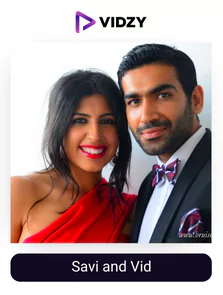
1. Savi and Vid
Instagram Channel: bruisedpassports
USP:
The couple gives you the experience of different destinations on your phone.
They started dating after high school, dated for several years, and were wed in 2008. What followed was a journey marked by love and a shared love of exploring, which resulted in their passports being stamped with images of every size, shape, and colour! With 1.2 million followers and 96 countries visited, Savi and Vid, the amazing duo behind Bruised Passports, are a household name when it comes to the top travel influencers from India (and counting). The couple enjoys taking luxurious vacations, but you can rely on them to research information for you on locations, itineraries, lodging recommendations, packing lists, budgeting advice, and pretty much everything else in between.
Their content on the platform is filled with traveling, their personal life, and much more in all formats making their reach go through the roof. All of their reels are there in the trending section and always gain millions of views.
They are thorough when it comes to making their audience aware of different destinations to really make an impact and help them. Make sure you follow one of the best travel influencers India 2024!
-
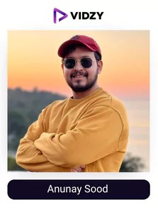
2. Anunay Sood
Instagram Channel: anunaysood
USP:
He will make you mesmerized with his consistent travel content.
Anunay Sood is a marketing expert, business owner, travel photographer, and blogger who wears many hats and is the owner of each one. Sood loves mountains, adventures, and using his camera to document them all.
He is a true inspiration for those who want to pursue their dream of traveling the world without giving up their jobs. His entertaining Instagram posts of deep diving have amassed over 1 million followers! He became close to Brinda Sharma (justthetwo_) because of travel, and the two are now busy traveling the globe together.
His reels are so perfectly shot, edited, and posted consistently making them appear in the trending section all the time and bagging millions of views and thousands of comments. He has generated so much authority over the years that he won cosmopolitan travel influencer of the year as well. Make sure you follow one of the best travel influencers on Instagram in India!
-
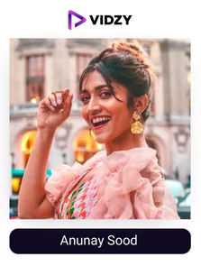
3. Larissa D’Sa
Instagram Channel: larissa_wlc
USP:
Her content quality is so amazing that she has appeared in Forbes top 100.
Larissa D'sa has accomplished everything, from winning numerous prestigious awards honouring her work as a travel influencer to hosting her own travel program for TravelXP called Unwind. D'sa's social media accounts are major travel inspiration because of the way she has a unique talent for aesthetically capturing unscripted moments from her travels.
The TEDx speaker uses Instagram, where she has over 714k followers, to discuss topics other than travel as well, such as fitness, mental health, art, and more. She has appeared in Forbes top 100, won cosmo travel influencer and exhibit travel influencer 2 times each, and is the go-pro ambassador reflecting the authority she has over the domain.
The way she portrays her story is what sets her apart from the competition. As Over 80% of marketers consider a creator’s content quality to be the biggest consideration for collaboration and negotiating rates as per bigcommerce, this influencer just checks the list of utmost quality and stands to be the ideal influencer to collaborate with the help of Vidzy.
If you are someone who loves to travel and wants to learn about your favorite destinations, the profile of one of the top travel Instagram accounts India is the ideal one to follow!
-
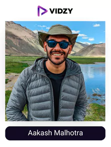
4. Aakash Malhotra
Instagram Channel: wanderwithsky
USP:
A passionate travel influencer who will ace you as passionate with his unique content
His bio on his website describes him as "A mountain boy from India who has a crush on the world!" and that is a fitting description. Because Aakash Malhotra, also known as Wander With Sky, has visited 42 nations to date, enjoys going on spontaneous adventures and vlogging them, and is on a mission to find happiness and self-discovery through global travel.
He describes himself as a "serial travelpreneur," and each breathtaking image on his Instagram speaks to his commitment to using his artistic lens to show the world to his passionate community of 703k followers.
His passion for traveling and making content is clearly visible in each post and helps him to convey the correct emotions of each destination through his content. Each post of his offers you something unique, this becomes a key aspect of why his reach is unmatchable. Make sure you follow one of the top travel bloggers on Instagram in India for some amazing travel content!
-
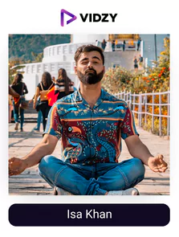
5. Isa Khan
Instagram Channel: khan.isa
USP:
He will make you fall in love with the mountains, etc through his amazing skills of capturing beauty.
Isa Khan is a former economics teacher who now works as a travel photographer, videographer, and content creator. He is best known for his posts on his Instagram channel @khan.isa, which has over 570k followers, in addition to his unwavering love for the Himalayan mountains.
He has recently led a few treks as well as explored the Himalayas and other mountainous areas of the nation. Hemkund Sahib, Har ki Dun, Valley of Flowers, Dodital, Dayara Bugyal, and Madhyamaheshwar were a few of the trekking highlights for him. Additionally, he has travelled to Ladakh and the Spiti Valley, two stunning but arid and chilly places.
Tata Motors, MG Motors, Samsung, Honda, Amazon, Airtel, Make My Trip, Goibibo, Taiwan Tourism Board, Renault, Panasonic, JBL, Bajaj Finserv, Canara Bank, Mahindra, National Geographic, Oppo, Godrej, and many more have collaborated with him in his success as a creator of travel content. Make sure you follow one of the top travel Instagram accounts India.
-
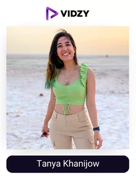
6. Tanya Khanijow
Instagram Channel: tanyakhanijow
USP:
A great personality coupled with great talent to portray different destinations.
Tanya Khanjijow quit her lucrative corporate position in an advertising agency to fully pursue her passion for travel. Her unending passion for travel, interesting cultures, fresh experiences, and all the good things to discover outside of one's four walls has led her on numerous solo trips over the years and earned her a loyal following of 565k on Instagram.
She has an amazing personality which just compliments the content she makes and spread positive vibes. She makes sure she is consistent in her content and continues to provide variety and uniqueness in whatever she does. This becomes the key reason why she can have such a massive reach on the platform along with all her content getting millions of views, etc.
Follow her journey for the breathtaking images from around the globe combined with the authentic feel-good factor that is hard to come by in today's digital world. Make sure you follow one of the top travel Instagram accounts India.
-
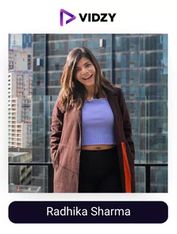
7. Radhika Sharma
Instagram Channel: radhika_nomllers
USP:
She will make travelling extremely easy for you.
Radhika Sharma left her job in 2018 to pursue her passion as a full-time traveller, Instagram influencer, YouTuber, and blogger. She enjoys sharing the stories behind her excursions with her followers through her pictures and videos. She also holds certifications in scuba diving and skiing. She shares her travel experiences on social media and writes about the "HOW" of travelling, such as how to travel on a budget or solo. Due to the high-quality content, she uploads, she has collaborated with a few top brands, including Samsung, Mahindra Adventure, Royal Enfield, and the Sabah Tourism Board.
She has an amazing following of over 400k as she uploads content consistently and provides value with the same. Moreover, she takes feedback from her audience to make her content as great as possible which a lot of the influencers don't focus on and loose the race. Make sure you follow one of the top travel bloggers on Instagram in India.
-
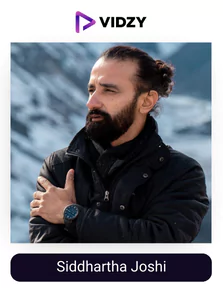
8. Siddhartha Joshi
Instagram Channel: siddharthajoshi
USP:
he captures simple moments in such a way that it becomes special.
Siddhartha Joshi is a blogger, photographer, travel writer and one of the top travel Instagram influencers India who is based in India. He loves to travel as much as he loves to inspire others to take even more amazing journeys by sharing tales and images from around the globe. He refers to himself as "The Wanderer" because he frequently enjoys just meandering around in the places he travels, meeting new people, seeing new places, and simply taking in new experiences. He has been featured in publications such as DNA, TOI, Hindustan Times, Buzzfeed, Discovery, CNN, NDTV Goodtimes, Shutterstock, and Traveller.
His profile reflects a variety of travel content which is captured through a different lens of creativity making you feel the vibes of it. He has mastered the game of Instagram as well due to which he is able to reach such a massive audience with his quality content making him much more authoritative in the field. Make sure you check out his content!
-
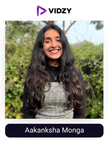
9. Aakanksha Monga
Instagram Channel: aakanksha.monga
USP:
She is exploring every corner of the world and making you aware about all you need to know before travelling.
With dozens of posts on her feed devoted to providing helpful advice, thoughtfully crafted themed lists, and disclosing what a travel blogger's real life is like, Aakanksha Monga is unquestionably one of the top travel Instagram influencers India. Monga's Instagram is open and supportive of aspiring travelers, especially women, while also revealing both the good and the bad.
She is extremely informative with each of her posts really fulfilling the purpose of an influencer, following her will make you comfortable with the different locations which she covers. This is the reason she has such a massive following of 339 along with a good engagement rate. All her reels reach 100k views easily and often appear in the trending section!
Monga aims to transcend age and gender barriers by sharing her knowledge of travel necessities, local travel communities, and safe lodgings. If you're considering travelling alone, don't forget to look her up on Instagram.
-
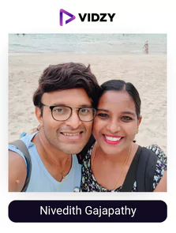
10. Nivedith Gajapathy
Instagram Channel: nivedithg
USP:
He posts audience-centric content and makes it better each time making him one of the top travel Instagram influencers India.
Nivedith is regarded as a macro travel influencer in India who is well-known for his travel content based on his reputation, accomplishments, and social assets. Nivedith resigned from his position to pursue his love of travel. He travels 200 days a year, visiting numerous locations, and while doing so, he makes incredible short films and documentaries. Since he was a teenager, he has been passionate about travelling and sharing his experiences with his friends. His followers are important to him, so he makes sure to entertain, educate, and make them aware of everything he posts.
In order to produce better content for different social media platforms like Instagram, Facebook, Twitter, etc., he prefers to concentrate on his skill set. He closely monitors the analytics to know how his content is doing with his audience to implement changes and make ti the best and all the content you need regarding travel. Nivedith is one of the few travel influencers that you absolutely must follow if you love to travel.
-
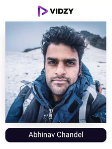
Instagram Channel: abhiandnow
USP:
He will make you travel the world with his content.
Abhinav Chandel, an enthusiastic traveler, photographer, writer and one of the best travel influencers on Instagram from McLeod Ganj in Himachal Pradesh, serves as an example for aspiring travel photography bloggers.
He quit his full-time job to pursue his dream career in travel photography. 2012 saw Abhinav's first solo trip to Nainital, and he never looked back. He is currently travelling the "road less travelled" to explore various regions of India and other nations, photographing some breathtaking landscapes. His photographs are distinctive and arresting because of the masterful use of colour and background. Visit his Instagram page to see some of his best writing; he also writes poetry and travelogues.
His ability to experiment with different types of travel content is what makes him unique and what makes him reach such a great amount of audience. All of his reels are over 100k views and reflect comments of adoration.
-
Instagram Channel: trulynomadly
USP:
She will make you fall in love with different places through her lens.
Sharanya Iyer had always been drawn to travel, but it wasn't until 2015 that she truly understood how deeply she had been bitten by the travel bug, or as she put it, an "incurable disease." Whether she has a disease or not, Iyer has embraced travel wholeheartedly, as evidenced by a quick glance at her Instagram. Iyer is always looking for new and exciting experiences, such as snorkelling between two continents when the temperature was only two degrees Celsius. Her website's main objective is to show people that it is possible to travel on a tight budget. Iyer is an influencer who genuinely recognizes the responsibility she bears, and her platform shows her dedication to her community.
The way she consistently posts quality content, interacts with her audience, experiments with different forms of content to make it interesting for the audience, etc is just a testament to that making her one of the best travel influencers on Instagram. This is why she has been able to grow a following of 247k along with an engagement rate that is constantly rising. Make sure you follow her!
-
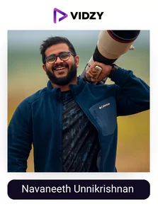
Instagram Channel: navaneeth_unnikrishnan
USP:
He clicks not just destinations but the universe.
Navaneeth Unnikrishnan, an astro-landscape photographer from Kerala, is renowned for taking some of the most incredible pictures of the universe that are invisible to the human eye along with different destinations. His photographs of deep-sky objects taken through telescopes are surreal. Navaneeth also employs his extraordinary camera abilities for aerial nightscapes, landscapes, travel, and portrait photography. Navaneeth is a self-taught photographer who acquired his skills through independent study and experimentation with various camera lenses. His photographs have appeared in Digital Camera Magazine, National Geographic, Huffington Post, BBC Earth, Space.com, BuzzFeed, Earth & Sky, and other well-known publications because of his exceptional photographic abilities.
Visit his website and Instagram page to see some of his most stunning work. He has some unique travel content there which he constantly posts and interacts with his audience to make them as aware as possible. He has gathered over 232k followers with a rising engagement rate making him one of the most sought-after or most followed travel influencers on instagram travel in the eyes of brands.
-
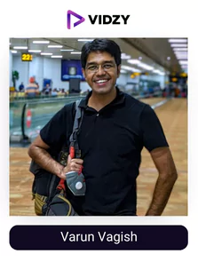
14. Varun Vagish
Instagram Channel: varunvagish
USP:
One of the most authoritative travel influencers owing to the quality content he has been uploading for over 10 years.
How many of us have shelled out thousands, if not millions, of dollars to travel to our ideal locations? For that one trip to a destination on their bucket list, many people save throughout the year. Varun Vagish, however, can travel three to four times a year on a single-trip's budget.
Dr Varun Vagish has a Ph.D. in mass communication and has worked as a journalist and newsreader for AIR. He has spent the last 15 years exploring the outlying regions of India, is currently a full-time traveler, vlogger, and blogger, and to top it all off, he was given the National Award by the Indian Ministry of Tourism.
He launched his YouTube channel in 2017 with the goal of learning the unusual tales from the most remote areas of our nation, and it quickly gained popularity. He primarily focuses on low-cost travel and offers incredible advice and tips to his audience, enabling them to visit stunning locations on the smallest possible budget. On his YouTube channel Mountain Trekker, Varun posts Hindi travel vlogs that have amassed over 100 million views and 1 million subscribers. The 1000 Mile Journey Doesn't Require a Million Dollars is the title of a Ted Talk he recently gave about his journey.
His Instagram offers a wide range of content, including information about various travel destinations and much more making him one of the most followed travel influencers on Instagram. Within the next three years, 8 out of 10 businesses plan to sell on social media as per statista, if you as a brand want to tap into this amazing opportunity, collaborating with this influencer with the help of Vidzy will be the ideal choice Make sure you follow him!
-
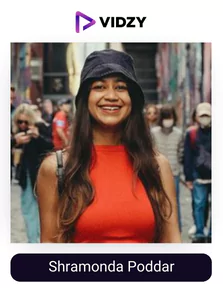
15. Shramonda Poddar
Instagram Channel: mishti.and.meat
USP:
She will share about different destinations and her personal experiences of them to help you with your travelling.
Traveling and meeting new people go hand in hand for Shramona Poddar. Through her joyful posts, her page radiates positivity. Traveling all over the nation, Poddar has many callings. In addition to photography, she also shares ownership of the Amrapali store. Poddar uses her platform to speak openly about important topics like the artificiality of carefully curated online personas and the alienating effects of social media.
Her informative posts will help you decide more wisely about where to travel next because you'll see various locations captured through various lenses. Don't forget to follow her!
-
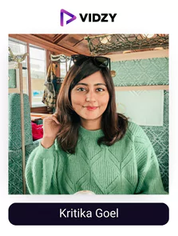
16. Kritika Goel
Instagram Channel: kritika_goel
USP:
She keeps all of her content simple yet creative making her audience reach really wide.
Like Varun Vagish, Kritika Goel quit her job and now works full-time as a content creator and YouTuber. In addition to posting them on Instagram, Kritika posts their incredible travel tales on YouTube.
Kritika Goel is one of the finest female travel influencers India who visits the most beautiful places and consistently manages to capture their beauty for her audience. In addition to sharing her travel experiences, she also creates travel-related informational content using techniques like editing, videography, and budgeting. You must binge-watch every piece of content she uploads to her social media platforms like Instagram where she has over 140k followers and an amazing engagement rate.
The king of quality she has maintained has led her to generate amazing authority and bag some of the top brands for collaboration.
-
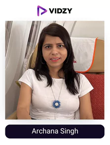
17. Archana Singh
Instagram Channel: travelseewrite
USP:
One of those passionate travel influencers who imbibe the vibes of the place through their content.
Archana is a brand strategist turned travel influencer who enjoys travelling to far-flung locations to learn about untold tales. She is one of India's most awarded or one of the finest female travel influencers India and has more than 17 years of marketing experience. She has spoken out on important environmental issues like climate change, responsible tourism, helping the less fortunate, women's empowerment, and many others.
She frequently speaks at events hosted by TEDx, WTM, PATA, and other organizations. Like Shivya, she left a lucrative corporate job to pursue her passion. She thinks that travelling is more than just a way to get away; she also thinks that anyone can change their lives if they follow their passions.
Make sure you check out her profile where she portrays her passion in the best manner possible. All her content will provide you with some value or information to make you more aware of different locations.
-
18. Sunny Gala
Instagram Channel: worthashott
USP:
He gives you the experience of travel content and poetry combined.
Photographer Sunny Gala, who is based in Mumbai, is renowned or one of the most famous travel influencers in India for taking some of the most fascinating pictures of adventure, travel, and lifestyle. He specializes in taking photographs of landscapes, people, food, and pre-weddings. His work is quite intriguing and thought-provoking. You should view his Instagram profile having more than 113k followers and a great engagement rate to see what we're referring to.
Additionally, Sunny Gala has a YouTube channel with more than 23,000 subscribers. Many amateur photographers looking to improve their photography skills watch his YouTube videos on photography tips and tricks. His travel videos on his YouTube channel are obviously too good to be missed. Sunny Gala also maintains a website with some of his best shots on it!
On his Instagram profile, you will see the best quality of travel content and the authority she reflects over the domain. One of his unique things is he mixes poetry with his travel videos which just makes the experience of his content to another level. Make sure you check out the magic he creates!
-
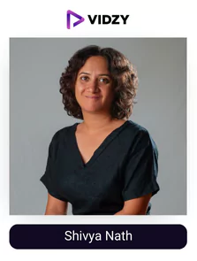
19. Shivya Nath
Instagram Channel: shivya
USP:
She has turned her passion into profession through consistently making great content.
She is a woman traveling alone who had the guts to quit her stable 9–5 job to go after something no one else was doing. The only thought that entered her mind was that she did not have to follow others' lead and that her motivation moving forward was her destination rather than whether she had a place to return home. She has visited more than 30 nations.
She has learned through travel what we would have learned even through a properly lived life. She asserts that she has challenged social norms for herself and claims to have broadened her comfort zone, thought on new horizons and stopped judging people based on their appearance. Her content or stories have appeared in TEDx, The Huffington Post, Your Story, NDTV, The Times Of India, WordPress, and BBC Travel.
On her profile, she makes sure to upload high-quality travel content consistently which is so perfectly shot it is as if you are there only. Make sure you follow one of the best female travel influencers India!
-
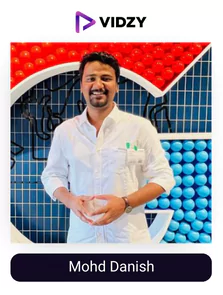
20. Mohd Danish
Instagram Channel: travelwithdanish
USP:
he is one of the top travel influencers owing to his ability to capture places in the best manner.
Danish, a travel photographer, and influencer based in Delhi, was bitten by the photography bug in 2017 while still in college. He was enthralled by how certain locations in Delhi appeared to be so alluringly beautiful in photographs while he was casually browsing the photos in National Geographic magazine. Despite having a degree in travel and tourism, he decided to pursue a career in travel photography and is now one of India's top independent photographers.
Danish, a self-taught photographer, began his career in 2018 and became well-known in just four short years. Numerous well-known publications and websites, including Nat Geo, Canon, Google, BBC, CNN, NDTV, TOI, and Hindustan Times, have published some of his photographs.
On Instagram, he has a sizable fan base that he interacts with to grow to almost 100k followers. His writing is exceptional and exhibits superb quality and editing. He is overcoming every challenge this field presents thanks to his passion. Be sure to accompany one of the top travel bloggers on Instagram in India on the adventure and discover the world through his eyes by following him.
To Sum Up
If you are interested in collaborating with some of the famous travel influencers in India who are evolving the dimension of travelling to new aspects, make sure to collaborate with Vidzy as a top video production company which has bought a revolution in the world of marketing by utilizing video content and the best strategies to make your business grow.
Over 3 billion people watch at least one video every day as per statista just reflecting how impactful indulging in video content can be.
So, what are you waiting for? Get in touch now!